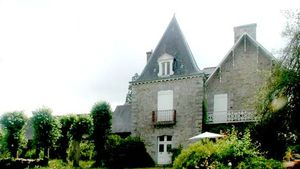
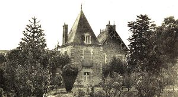
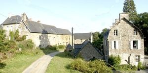

Recensement Jean-Claude Truffet
| Département | 35 — Ille-et-Vilaine |
| Canton | Val-Couesnon |
| Commune | Romazy |
| Type d'édifice | Château |
| Période d'origine | XII-XV-XVII |



MONTMORON, cité dès le milieu du XIIe siècle comme le fief de Guillaume l'Angevin, Montmoron passa par alliance à la famille de Sévigné à la fin du XVIe siècle, puis en 1695 à la famille du Hallay qui l'avait encore en 1789. L'ancien manoir possédait un droit de haute justice ; il fut érigé en comté en 1657. L'histoire du site est complexe et peu documentée cependant les éléments conservés sur place permettent d'avancer quelques hypothèses. Les vestiges les plus anciens (XVIe siècle), situés au niveau du corps de logis ouest et visibles sur la cour (façade est) sont très probablement ceux de l'ancien manoir ; ce corps de bâtiment conserve des vestiges de portes anciennes et une grande baie surmontée d'une accolade ; partiellement détruit, il a été reconstruit et remanié, en particulier au niveau supérieur, par le percement de baies au XIXe siècle. Il devait être prolongé vers le nord, par un corps de bâtiment bas, des dépendances, lequel a été rehaussé postérieurement. Au nord, un logis placé en retour d'équerre conserve des éléments de la fin du XVIe siècle ou du début du XVIIe siècle ; il est flanqué, à l'arrière, par un autre logis datant du XVIIIe siècle (linteau cintré en bois) et transformé au XIXe siècle. Le corps de logis Est (à droite de la cour) est plus difficile à interpréter ; à cet emplacement, trois parcelles différentes et un corps de bâtiment en ruine au sud-est, les élévations indiquent la présence de bâtiments anciens très lourdement remaniés, tant sur la façade ouest avec la reprise de toutes les ouvertures et des décalages de niveaux, que sur la façade Est où les baies ont pour la plupart été percées au XIXe siècle.
MONTMORON, par ailleurs, les quatre souches de cheminées et la toiture brisée datent également du milieu du XIXe siècle. Cet ensemble a pu correspondre aux communs d'un château construit au cours de la première moitié du XVIIe siècle, disparu avant la Révolution et dont on ignore l'emplacement. La conservation du mur de clôture du jardin, d'un rare bassin polygonal (1625) placé au centre de celui-ci et alimenté par un système hydraulique et d'une remarquable chapelle datée des années 1630, permet de supposer qu'un corps de logis contemporain et de même qualité architecturale ait été édifié à cette période faste de l'histoire de la seigneurie. Acheté comme bien national à la Révolution, le château de Montmoron a alors été divisé en deux propriétés séparées par la cour. Tandis que les bâtiments Est sont transformés en un agréable logis au cours du XIXe siècle, il faut attendre les années 1900 pour que d'importants travaux soit entrepris dans le corps ouest. Le logis est alors agrandi vers l'ouest par la construction d'un bâtiment de style "châlet" conforme au goût de l'architecture de villégiature de l'époque. Les abords du château sont modernisés avec la construction d'une conciergerie à l'ouest de la chapelle, d'un portail d'entrée et d'un pigeonnier. Hormis une remarquable chapelle et un bassin, rien ne subsiste de l'ancien château de Montmoron, ruiné avant la Révolution. Les bâtiments existants témoignent des aménagements successifs du site depuis le XVIe siècle jusqu'au début du XXe siècle et de l'aménagement, au milieu du XIXe siècle, d'un nouveau corps de logis à l'est.
famille du Hallay
"
A Romazy le château de Montmoron gps 48° 22' 34" nord, 1° 29' 45" ouest